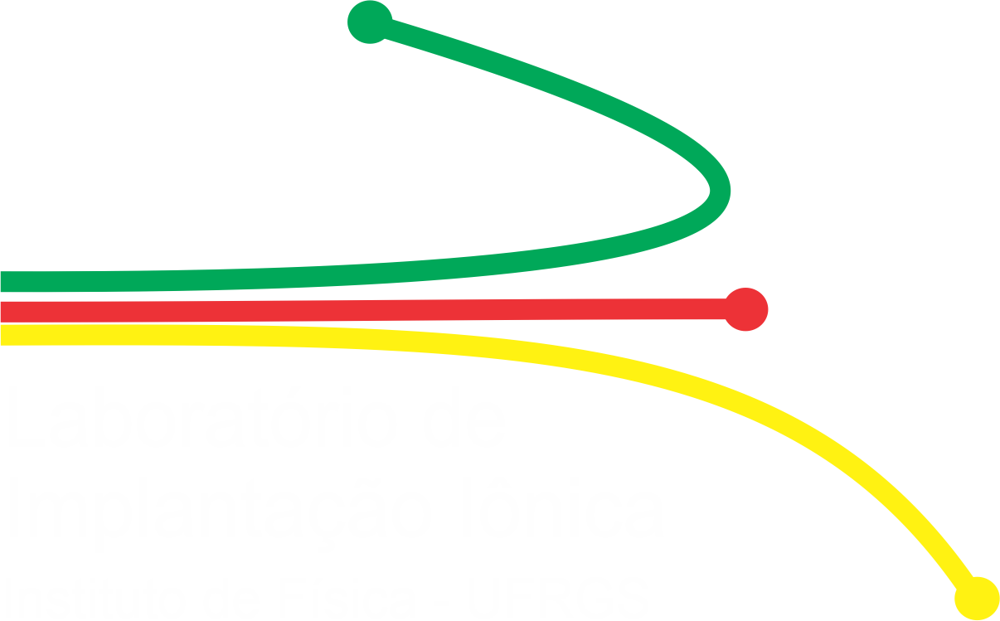

Plataforma multiusuária atendida pelo Programa PREMIUM - PROPESQ


Destaques
Aberta Chamada: está disponível o período para solicitação de uso dos aceleradores Tandetron e Implantador.
Pesquisadores, alunos, técnicos e cientístas interessados podem submeter solicitações. Incentivamos todos a enviar suas solicitações o quanto antes, pois a disponibilidade é limitada..
Roteiro para cadastramento e submissão de projetos.
Caso queira fazer o cadastramento e a submissão de projetos, você pode seguir o seguinte roteiro
Conexões Internacionais
Parcerias internacionais ampliam impacto global da ciência brasileira.